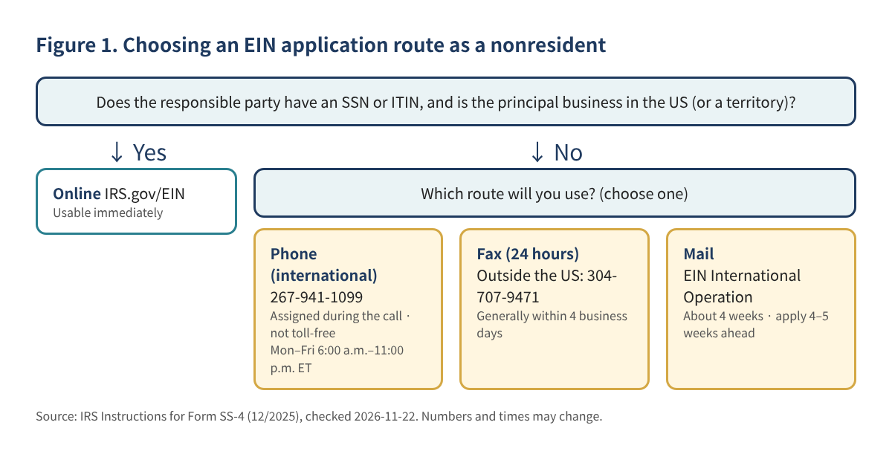
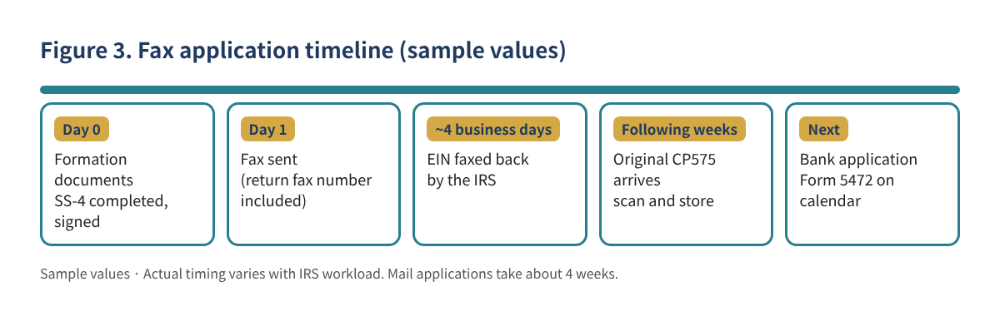
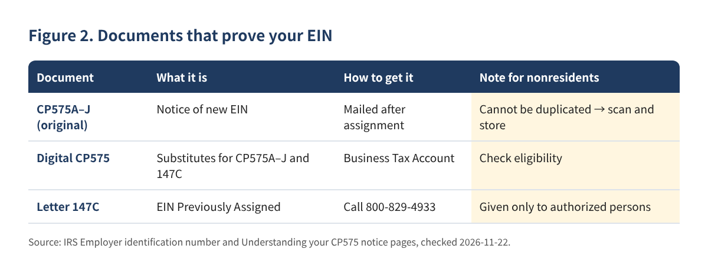

For a non-US founder who has just formed a US LLC, the first roadblock is often the EIN (Employer Identification Number). Banks ask for it, federal filings require it, and yet the IRS online application is closed to anyone without a Social Security number (SSN) or Individual Taxpayer Identification Number (ITIN). This guide walks through the official routes for getting an EIN on Form SS-4 without an SSN or ITIN (phone, fax and mail), how long each one takes according to the IRS, and the difference between the two documents that prove your EIN: the CP575 notice and Letter 147C.
This article is general educational information, not tax, legal or financial advice. Confirm your own situation with a professional and official sources.
Who this is for ① Founders living outside the US who formed (or plan to form) a US LLC and have no SSN or ITIN ② Owners of a single-member, foreign-owned LLC who need an EIN to file Form 5472 ③ Owners who lost their EIN confirmation (CP575) and need proof for a bank ④ Family members or advisers in the US helping a foreign founder
A note for residents of Korea If you live in Korea, owning a US company or holding a US account can create obligations on the Korean side too, for example overseas direct investment reporting under Korea's foreign-exchange rules, overseas financial account reporting, and submissions to the National Tax Service about overseas subsidiaries. Whether they apply and when depends on your facts and on rules that change, so confirm with a Korean tax professional or your bank. Founders from other countries should check their own home-country rules.
An EIN is the taxpayer identification number the IRS assigns to a business, the business counterpart of an individual's SSN. The IRS issues EINs free of charge, and its EIN page warns readers to beware of websites that charge for one.
Common reasons a nonresident-owned US LLC needs an EIN:
For formation itself and an overview of federal filings, see US LLC guide for Korean nonresidents.
According to the IRS, the online application is only for applicants with a legal residence or principal place of business in the US or a US territory, and it requires the responsible party's SSN or ITIN. If your principal place of business is outside the US, the IRS directs you to apply by phone, fax or mail. The table below summarizes the Instructions for Form SS-4 (revised December 2025).
| Route | Who can use it | When you get the EIN (per IRS) |
|---|---|---|
| Online | Residence or principal business in the US or a territory, with SSN/ITIN | Usable immediately |
| Phone | International applicants only | Assigned by an IRS representative during the call |
| Fax | Anyone (available 24 hours) | Generally within 4 business days |
| Anyone | About 4 weeks |
| Route | Contact (principal business outside the 50 states and DC) |
|---|---|
| Online | IRS.gov/EIN |
| Phone | 267-941-1099 (not toll-free), Mon–Fri 6:00 a.m.–11:00 p.m. Eastern |
| Fax | 855-215-1627 (within the US), 304-707-9471 (outside the US) |
| Internal Revenue Service, Attn: EIN International Operation, Cincinnati, OH 45999 |
If the principal business is in one of the 50 states or DC, the fax number is 855-641-6935 and the mail goes to "Attn: EIN Operation." The phone caller must be authorized to receive the EIN and answer questions about Form SS-4, and if the representative asks, the signed SS-4 (including any third-party designee authorization) must be mailed or faxed within 24 hours. Which case applies depends on how the company actually operates; if you are unsure, confirm with a US CPA or enrolled agent.

Form SS-4 has lines 1 through 18. Most are straightforward (name, address, start date), but a foreign-owned single-member LLC should take particular care with the lines below.
| Line | What it asks | What the instructions say |
|---|---|---|
| 1 | Legal name | Exactly as on the formation document |
| 7a / 7b | Responsible party name / SSN, ITIN or EIN | Must be an individual. If the person has no SSN or ITIN and is ineligible for one, enter "foreign" or N/A on 7b |
| 8a / 8b | Is it an LLC? / Number of members | Yes on 8a, member count on 8b |
| 9a | Type of entity | Foreign-owned disregarded entity applying for Form 5472: check "Other" and write "Foreign-owned U.S. disregarded entity-Form 5472" |
| 10 | Reason for applying | Check one box only. Here: "Other," entering "Foreign-owned U.S. disregarded entity filing Form 5472" |
| 12 | Closing month of accounting year | December for a calendar year |
| 13 | Highest number of employees expected in the next 12 months | Enter 0 if none |
| 18 | EIN previously issued? | Indicate if the applicant had one before |
The IRS describes the responsible party as the individual who owns, controls or exercises effective control over the entity and can manage its funds and assets. Nominees cannot apply for an EIN and should not be listed on Form SS-4; if one was listed, the IRS says to correct the application and identify the actual responsible party. A change of responsible party must be reported on Form 8822-B within 60 days.
Complete this section if you want, for example, a US tax professional to answer questions about the form and receive the EIN. The instructions say the signature area must be completed for the authorization to be valid and that the designee's authority ends when the EIN is assigned and released. The number is released to the designee by the method used to apply, but the EIN notice is mailed to the taxpayer.

Banks often want an IRS-issued document, not just the number. The IRS describes these options:
| Document | What it is | How to get it |
|---|---|---|
| CP575A–J (original notice) | Notice of New Employer Identification Number | Mailed after the EIN is assigned. The IRS says the original cannot be duplicated or recreated |
| Digital CP575 | EIN verification notice downloaded from Business Tax Account; can substitute for CP575A–J and Letter 147C | Tax Records in Business Tax Account, for eligible users |
| Letter 147C | "EIN Previously Assigned" letter | Call the Business & Specialty Tax Line, 800-829-4933 (Mon–Fri 7:00 a.m.–7:00 p.m. local time) |
| Entity transcript | Copy of the entity's tax record | IRS business transcript request process |
Business Tax Account has eligibility rules by user type and requires third-party identity verification. The IRS page does not say whether a foreign owner without an SSN or ITIN can use it, so for nonresidents it matters to keep the original CP575 safe as soon as it arrives.

This is a fictional example for illustration; any resemblance to real people or companies is coincidental. All dates are sample values.
Ana Ruiz lives in Madrid and formed a single-member LLC, Northline Studio LLC, in a US state. She has no SSN or ITIN and no US office or employees. On Form SS-4 she enters "foreign" on 7b, "Other – Foreign-owned U.S. disregarded entity-Form 5472" on 9a, and "Other – Foreign-owned U.S. disregarded entity filing Form 5472" on 10, adds her fax number for the reply, and faxes it to the outside-the-US number, 304-707-9471.
| Sample values | Date | What happens |
|---|---|---|
| Day 0 | 2026-03-02 (Mon) | Formation documents in hand; SS-4 completed and signed |
| Day 1 | 2026-03-03 (Tue) | Fax sent (outside-the-US number) |
| Day 1 + up to 4 business days | ~2026-03-09 (Mon) | EIN faxed back (IRS: generally within 4 business days) |
| Following weeks | Late March–April 2026 | Original CP575 arrives by mail; scanned and filed |
| Next | April 2026 | Bank application; Form 5472 deadline added to the calendar |
Because the IRS instructions say to use only one application method per entity, keep that in mind before resending the same form by another route if a reply is slow. Actual processing times can vary with IRS workload.
The SS-4 instructions say to enter "foreign" or N/A on line 7b if the responsible party has no SSN or ITIN and is ineligible for one. So an ITIN is not needed just to apply for the EIN. Whether you need an ITIN for another purpose, such as an individual return, is a separate question.
Under the IRS instructions, on the international applicant phone line an IRS representative assigns the EIN during the call; fax is generally within 4 business days and mail about 4 weeks. The caller must be authorized to receive the EIN, and the number is not toll-free, so international call charges may apply.
The IRS points to requesting Letter 147C from the Business & Specialty Tax Line (800-829-4933) or, if eligible, downloading a digital CP575 from Business Tax Account. The IRS verifies identity on that call and gives the number only to someone authorized to receive it.
The IRS limits EIN issuance to one per responsible party per day, whether you apply online, by phone, by fax or by mail. Plan accordingly if you will run several companies.
A change of responsible party must be reported on Form 8822-B within 60 days. Check with a US tax professional how an ownership change affects your other filings.
Disclaimer: This article is general educational information and is not tax, legal or financial advice. IRS forms, phone numbers, processing times and financial institution policies change; check IRS.gov and other official sources for current information before you apply. For your specific situation, consult a US CPA, enrolled agent or attorney, and for home-country obligations a licensed professional in your country.